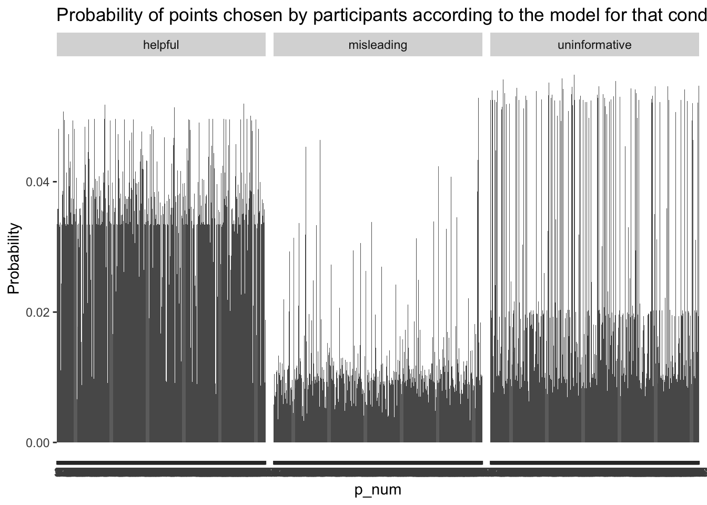
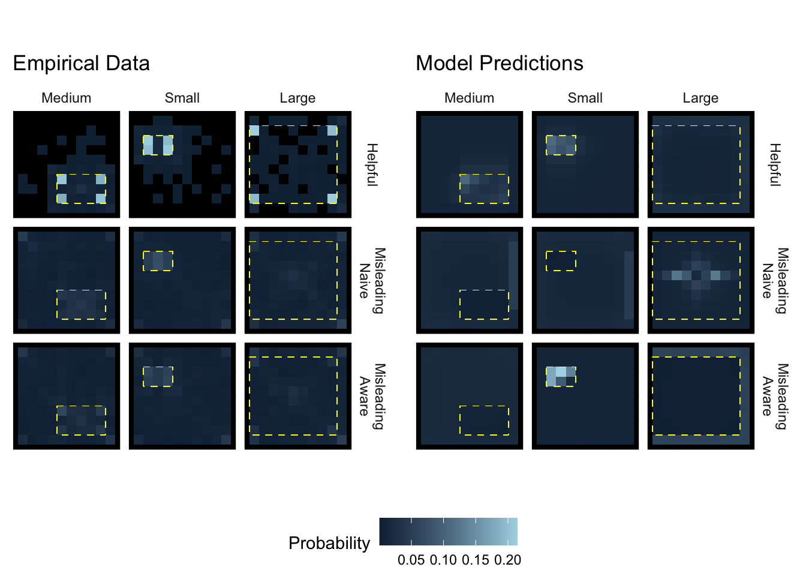
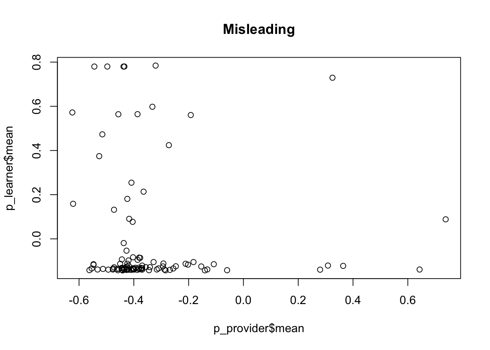
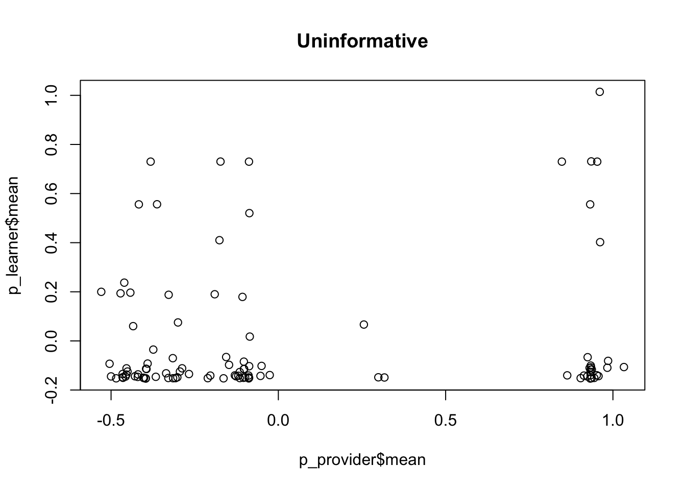
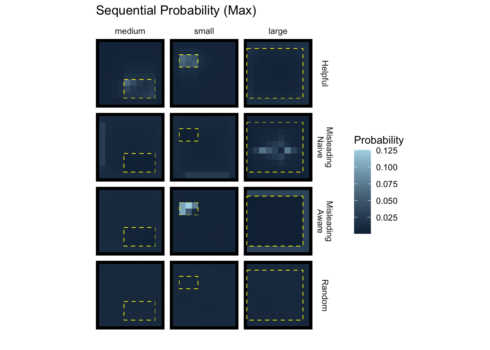
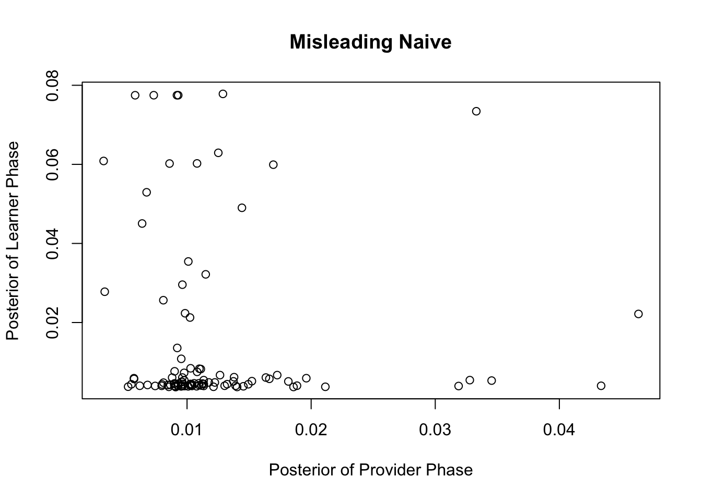
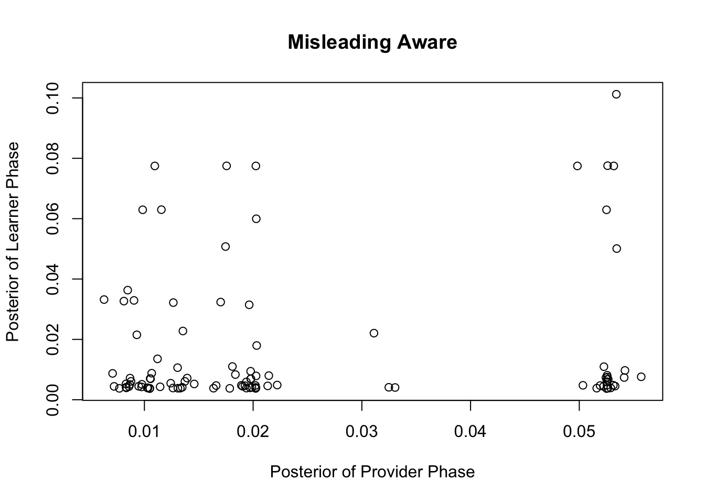
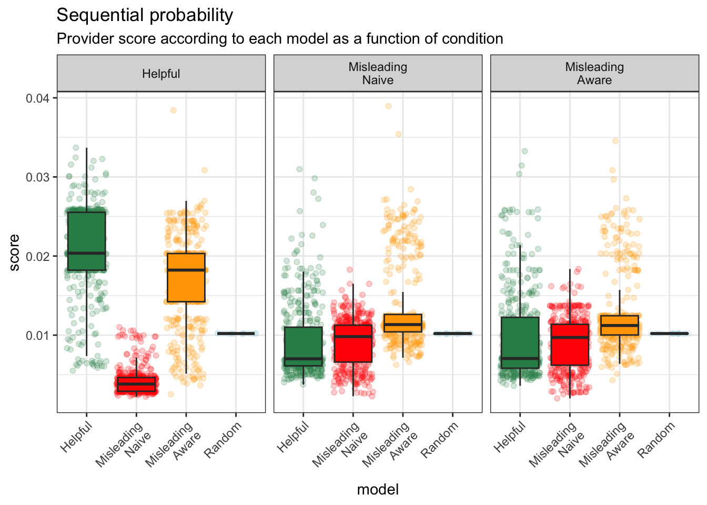
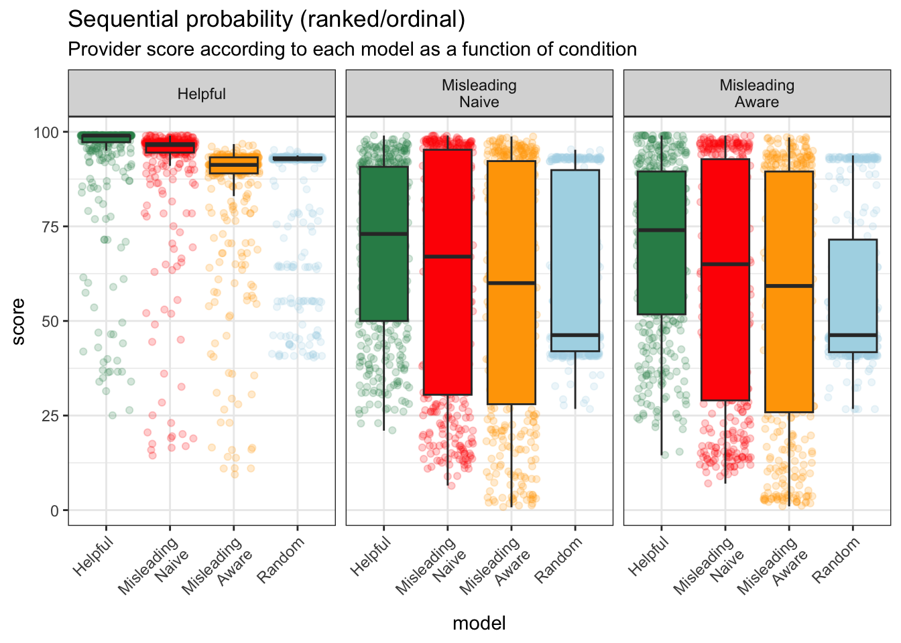
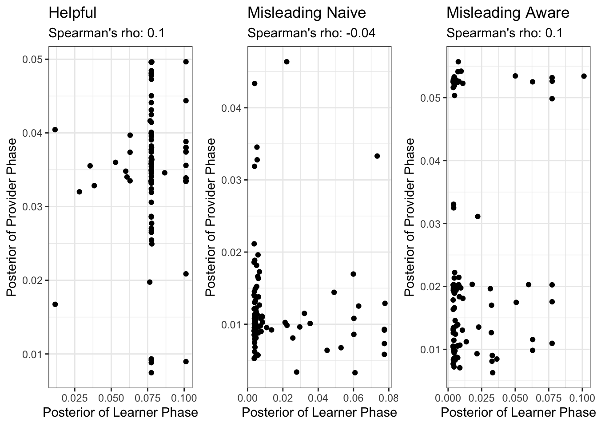

Participant performance in each provider condition
Code
# inspect provider scores on their ownplotProviderScores =function(provider_scores, ranked =FALSE){ sum_provider_scores <- provider_scores %>%group_by(p_num, provider_cond) %>%summarise(prob=mean(as.numeric(prob))) if (ranked) { plot <- provider_scores %>%ggplot(aes(x = p_num, y =100-as.numeric(prob)))+geom_col(data = sum_provider_scores)+geom_point(aes(colour = size))+labs(y ="Reverse rank (100 = best)", title ="Rank of participant responses according to model")+facet_wrap(~provider_cond)} else { plot <- provider_scores %>%ggplot(aes(x = p_num, y =as.numeric(prob)))+geom_col(data = sum_provider_scores)+geom_point(aes(colour = size))+labs(y ="Probability", title ="Probability of points chosen by participants according to the model for that condition")+facet_wrap(~provider_cond)} plot}plotProviderScores(provider_scores)

Because there is higher posterior density allocated to certain points in different conditions, it makes sense to look at this in an ordinal way. In other words, what rank was the point they chose relative to all of the possible points? In the interest of keeping the plots consistent, I have reverse ordered the plot below so that “100” is the best possible point they could have chosen according to the model, and 1 is the worst.
Is there a relationship between how well a participant can provide clues in a given condition with how they can learn the rectangle?
Code
getProviderLearnerCorr =function(provider_scores, alpha, blocks =8, recursive =FALSE, main =""){if (alpha >0 ){ cond <-"helpful" } elseif (alpha ==0){ cond <-"random" } elseif (alpha <0& recursive ==TRUE) { cond <-"misleading" } else { cond <-"uninformative" } learner_posteriors <-NULLfor (b in blocks) {load(here(paste0("experiment-3/modelling/04_output/b",b,"-all-alpha-posteriors-",cond,".Rdata"))) learner_posteriors <-rbind(learner_posteriors, all_alpha_posteriors) }# get participants who were in each condition participants <-unique(learner_posteriors$pid) p_provider <- provider_scores %>%filter(uid %in% participants & provider_cond == cond) %>%# get 1 score for each participantgroup_by(uid)%>%summarise(mean =mean(prob)) p_learner <- learner_posteriors %>%filter(alpha == alpha) %>%group_by(pid)%>%summarise(mean =mean(posterior))print(cor(p_provider$mean, p_learner$mean)) plot(p_provider$mean, p_learner$mean, main = main) }# load learning phase datablocks <-8
Raw probabilities
Code
getProviderLearnerCorr(provider_scores, -1, blocks = blocks, recursive =FALSE, main ="Helpful")
[1] 0.8718527

Code
getProviderLearnerCorr(provider_scores, -1, blocks = blocks, recursive =FALSE, main ="Misleading")
[1] 0.8718527

Code
getProviderLearnerCorr(provider_scores, -1, blocks = blocks, recursive =TRUE, main ="Uninformative")
[1] 0.4794691

Ranks
Code
getProviderLearnerCorr(provider_scores_ranked, -1, blocks = blocks, recursive =FALSE, main ="Helpful")
[1] -0.5417439

Code
getProviderLearnerCorr(provider_scores_ranked, -1, blocks = blocks, recursive =FALSE, main ="Misleading")
[1] -0.5417439

Code
getProviderLearnerCorr(provider_scores_ranked, -1, blocks = blocks, recursive =TRUE, main ="Uninformative")
[1] -0.4323647

Filtering participants based on performance in learning phase
If we only include participants who performed in line with model predictions in the provider phase, how does that influence the group-level learning phase results?
Code
score_by_model <- provider_scores_all %>%#filter(provider_cond == learn_cond) %>%group_by(p_num, provider_cond, model) %>%summarise(score =median(prob))score_by_model %>%ggplot(aes(x = p_num, y = score, fill = model))+geom_bar(position="dodge", stat="identity")+labs(title ="Provider score according to each model as a function of condition")+facet_wrap(~provider_cond)

Random always does well in the ranked comparison because everything is rank 1, so let’s remove that here.
Code
score_by_model_rank <- provider_scores_ranked_all %>%filter(model !="random") %>%group_by(p_num, provider_cond, model) %>%summarise(score =median(100-prob))score_by_model_rank %>%ggplot(aes(x = p_num, y = score, fill = model))+geom_bar(position="dodge", stat="identity")+labs(title ="Provider score according to each model as a function of condition")+facet_wrap(~provider_cond)

Now let’s look at quantitatively at which participants behaved most like each model in the respective conditions.
Libearl filtering: Remove participants who act helpful all the time.
Liberal (more relaxed) filtering: filter based on 1. If the best model in the helpful condition was the helpful model and 2. If the best model in the misleading condition was not the helpful condition. I think it’s a good idea to remove the uninformative condition here, because the uninformative model highly resembles the helpful model, so it might not exclude participants who are just acting like a helpful provider.
Code
# Figure out which model performed best for each participant and techer conditiongetBestProviderModel =function(scores_by_model, models){# Convert to wide formatscores_by_model_wide <- scores_by_model %>%pivot_wider(id_cols =c(p_num, provider_cond),names_from = model,values_from = score )# make temporary df with unnecessary columnstmp <- scores_by_model_wide[,models]best_models <-apply(tmp, 1, function(row) { models[which.max(row)]})scores_by_model_wide$best_model <- best_modelsscores_by_model_wide}models <-unique(provider_scores_all$model)best_models <-getBestProviderModel(score_by_model, models) # Liberal filtering: filter based on 1. If the best model in the helpful condition was the helpful model and 2. If the best model in the misleading condition was *not* the helpful condition. good_subj_liberal <- best_models %>%# because uninformative and helpful often mimick each other, removing uninformative. filter(provider_cond !="uninformative") %>%mutate(match =case_when(provider_cond =="helpful"& best_model =="helpful"~TRUE, provider_cond =="misleading"& best_model !="helpful"~TRUE,#provider_cond == "uninformative" & best_model != "helpful" ~ TRUE,TRUE~FALSE )) %>%group_by(p_num) %>%summarise(sum =sum(match)) %>%filter(sum ==2)vec_good_subj_liberal <-unique(good_subj_liberal$p_num)print(c("Participants who met the liberal provider phase exclusion criteria ", vec_good_subj_liberal))
[1] "Participants who met the liberal provider phase exclusion criteria "
[2] "1"
[3] "2"
[4] "3"
[5] "4"
[6] "7"
[7] "8"
[8] "9"
[9] "13"
[10] "14"
[11] "15"
[12] "17"
Plot learner behavior
Code
#load leaner data load(here("experiment-3/data/derived/data_cartesian.Rdata"))# load target block dataload(here("experiment-scenarios/target-blocks/data/target-block-8-Cartesian.Rdata"))# load experiment condition dataload(here("experiment-3/data/derived/all_conditions.Rdata"))# filter conditions of interest-- let's just look at the second target block for now. exp_params <- all_conditions %>%filter(blocks ==8, clues %in%1:4) # get participant IDsPID <-unique(d_cartesian$pid)# get participant IDs who passed liberal exclusion criteriagood_ps <- PID[vec_good_subj_liberal]data_g <- d_cartesian %>%filter(pid %in% good_ps)getHypProbs(d = data_g, all_conditions = exp_params, experiment =3, file_label ="-filtered-lib")plotHeatMaps(all_conditions = exp_params, experiment =3, save =FALSE, file_label ="-filtered-lib")
[1] "1 out of 16"
[1] "2 out of 16"
[1] "3 out of 16"
[1] "4 out of 16"
[1] "5 out of 16"
[1] "6 out of 16"
[1] "7 out of 16"
[1] "8 out of 16"
[1] "9 out of 16"
[1] "10 out of 16"
[1] "11 out of 16"
[1] "12 out of 16"
[1] "13 out of 16"
[1] "14 out of 16"
[1] "15 out of 16"
[1] "16 out of 16"

Conservative filtering: Model must match condition
Filter to only include participants whose best model matched the provider condition they were in.
Code
good_subj_conservative <- best_models %>%mutate(match =case_when(provider_cond == best_model ~TRUE,TRUE~FALSE )) %>%group_by(p_num) %>%summarise(sum =sum(match)) %>%filter(sum ==3)vec_good_subj_conservative <-unique(good_subj_conservative$p_num)print(c("Participants who met the conservative provider phase exclusion criteria ", vec_good_subj_conservative))
[1] "Participants who met the conservative provider phase exclusion criteria "
[2] "4"
Repeat for ranked data
Code
models <-unique(score_by_model_rank$model)best_models <-getBestProviderModel(score_by_model_rank, models) # Liberal filtering: filter based on 1. If the best model in the helpful condition was the helpful model and 2. If the best model in the misleading condition was *not* the helpful condition. good_subj_liberal <- best_models %>%# because uninformative and helpful often mimick each other, removing uninformative. filter(provider_cond !="uninformative") %>%mutate(match =case_when(provider_cond =="helpful"& best_model =="helpful"~TRUE, provider_cond =="misleading"& best_model !="helpful"~TRUE,TRUE~FALSE )) %>%group_by(p_num) %>%summarise(sum =sum(match)) %>%filter(sum ==2)vec_good_subj_liberal <-unique(good_subj_liberal$p_num)print(c("Participants who met the liberal provider phase exclusion criteria ", vec_good_subj_liberal))
[1] "Participants who met the liberal provider phase exclusion criteria "
[2] "2"
[3] "8"
[4] "12"
[5] "16"
[6] "17"
Code
good_subj_conservative <- best_models %>%mutate(match =case_when(provider_cond == best_model ~TRUE,TRUE~FALSE )) %>%group_by(p_num) %>%summarise(sum =sum(match)) %>%filter(sum ==3)vec_good_subj_conservative <-unique(good_subj_conservative$p_num)print(c("Participants who met the conservative provider phase exclusion criteria ", vec_good_subj_conservative))
[1] "Participants who met the conservative provider phase exclusion criteria "